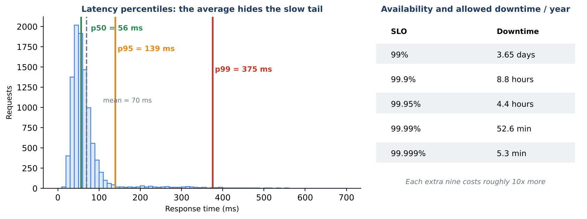
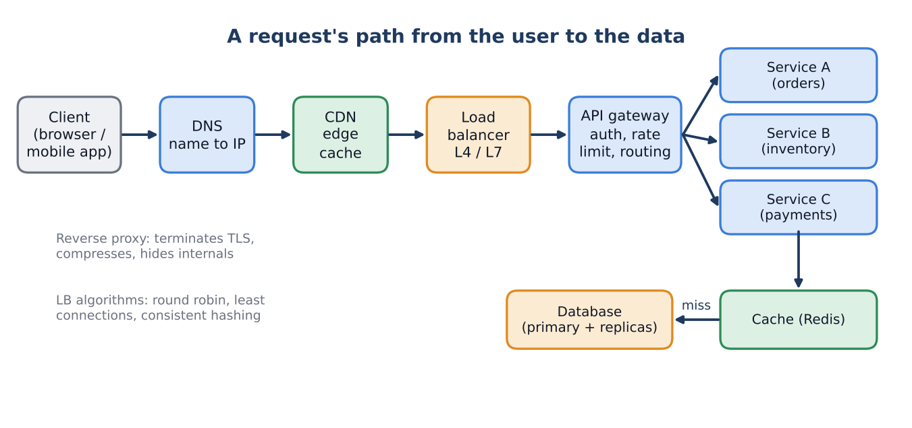
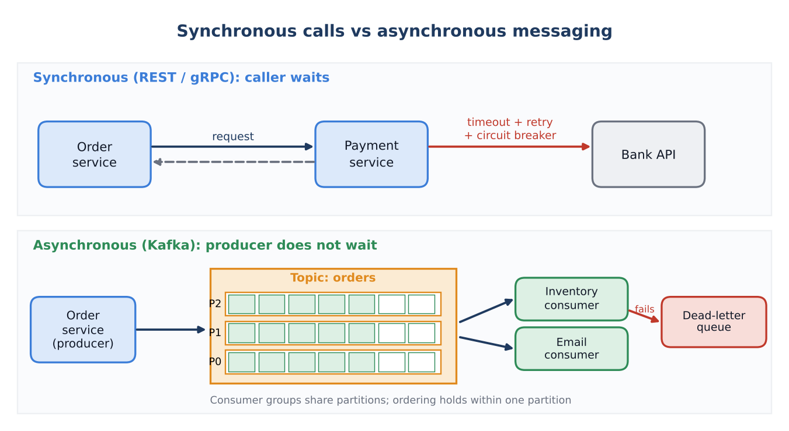
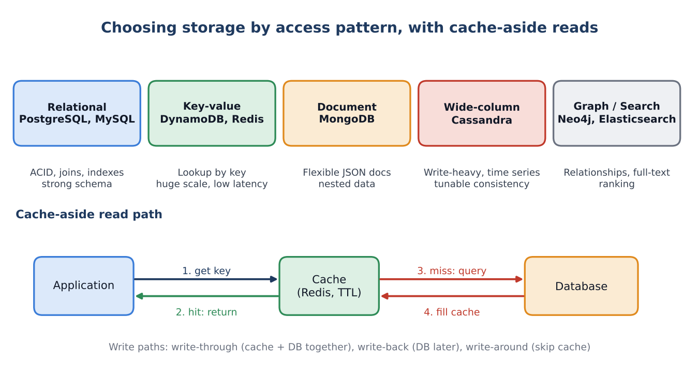
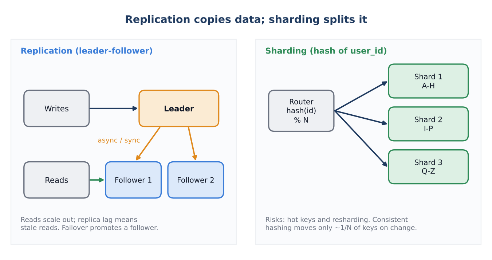
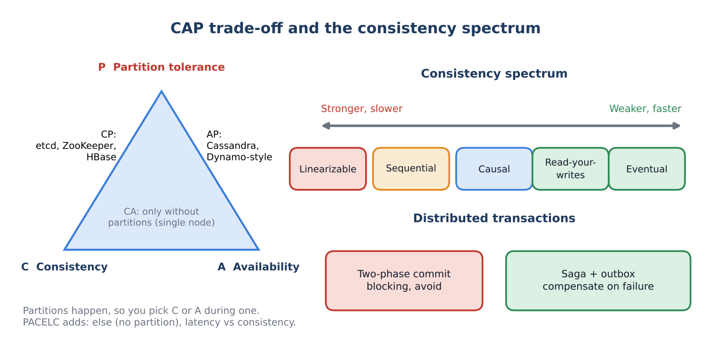
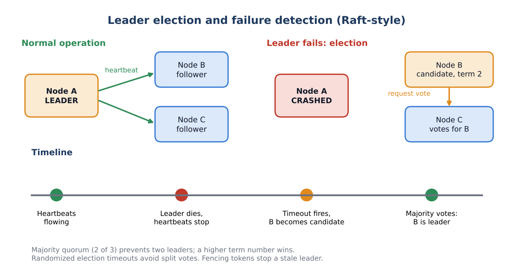

Track: System Design
System Design Interview Guide
Diagrams, questions and scenarios with answers
Seven topics in study order: how systems are measured, how requests travel, how services talk, how data is stored, how data is scaled, consistency trade-offs, and coordination during failures. Each topic has a table of what to know, a diagram, eight interview questions and three scenarios with model answers.
Contents
Work through the topics in order, then use the appendices as a quick reference before an interview. Looking for company-specific preparation? See the Coupang prep catalog.
| Group | Section | What it covers |
|---|---|---|
| Topics 1-7 | Core system design topics | How Systems Are Measured; How Requests Travel; How Services Talk; How Data Is Stored; How Data Is Scaled; Consistency Trade-offs; Coordination During Failures |
| Appendix | Numbers and formulas; abbreviations and full forms | Quick reference at the end |
How to use this guide
How to use this part
Each topic follows the same layout so you can revise quickly: a short introduction, a table of everything you should know, a diagram, eight interview questions with model answers, and three scenario questions with model answers.
First pass: read the 'What to know' table and the diagram. Be able to explain every row in two sentences.
Second pass: cover the answers and respond to each question aloud in under two minutes, then compare.
Third pass: for scenarios, structure your reply as clarify, estimate, design, trade-offs, failure modes.
Answers are model answers. Adapt them with examples from your own systems; interviewers value real experience.
A reusable framework for any design question
Clarify requirements: users, features, read/write ratio, latency and availability targets, consistency needs.
Estimate scale: QPS, storage, bandwidth, using round numbers and stating assumptions.
Define the API and the data model, then pick storage by access pattern.
Draw the high-level design: clients, edge, load balancer, services, cache, database, queue.
Deep dive on the hardest component: partitioning, hot spots, consistency, failure handling.
Discuss trade-offs and failure modes: what breaks at 10x, when a dependency is down, during a region outage.
Close with monitoring, rollout and what you would build next.
Topic 1: How Systems Are Measured
Every design starts with numbers. Before choosing components you need to know how fast the system must respond, how much traffic it carries, how much data it stores, and how often it may fail. These measurements let you justify every later decision.
What to know
| Area | Key points |
|---|---|
| Latency | Time for one request. Use percentiles (p50, p95, p99), not averages, because the slow tail hurts real users. Tail latency compounds when one request fans out to many services. |
| Throughput | Work done per second: QPS/RPS for reads and writes, TPS for transactions, MB/s for data. Peak is typically 2-5x average. |
| Availability and reliability | Uptime as a percentage (nines). Related terms: MTBF (time between failures), MTTR (time to recover), durability (data is not lost). |
| SLI, SLO, SLA, error budget | SLI is the measurement, SLO the internal target, SLA the contractual promise with penalties. Error budget = 100% minus SLO, spent on releases and risk. |
| Capacity estimation | Back-of-envelope math for QPS, storage, bandwidth and memory. Round aggressively: 1 day is about 100,000 seconds, so 1M requests per day is about 12 QPS. |
| Little's Law | L = lambda x W: concurrent requests = arrival rate x time in system. Sizes thread pools, connection pools and instance counts. |
| Scalability | Vertical (bigger machine) vs horizontal (more machines). Horizontal needs stateless services and partitioned data. |
| Queuing and saturation | Latency rises sharply as utilization nears 100%. Keep headroom (60-70%) and use load shedding. |
| Observability | Metrics, logs and traces. RED method for services (Rate, Errors, Duration), USE method for resources (Utilization, Saturation, Errors). |
| Load and capacity testing | Load, stress, soak and spike tests to find bottlenecks before production does. |
Diagram

Figure 1. Latency percentiles show the slow tail that the mean hides; each extra nine of availability cuts downtime by 10x.
Interview questions and model answers
Q1.1 Why use p99 latency instead of the average?
The average hides outliers. If 1% of requests take 3 seconds, a page making 50 backend calls will hit a slow one in about 40% of loads. Percentiles show what real users experience, and SLOs are normally set on p95 or p99.
Q1.2 What is the availability of two 99.9% components in series, and in parallel?
In series you multiply: 0.999 x 0.999 = 99.8%. In parallel (either one is enough, independent failures) failure probabilities multiply: 1 - 0.001 x 0.001 = 99.9999%. This is why redundancy raises availability and long dependency chains lower it.
Q1.3 Explain SLI, SLO, SLA and error budget.
SLI is a measured indicator, for example the share of requests under 300 ms. SLO is the target for it, for example 99.9% over 30 days. SLA is the external contract with penalties, usually looser than the SLO. The error budget is the allowed failure (0.1% here); when it is spent, teams freeze risky releases and focus on reliability.
Q1.4 State Little's Law and use it.
L = lambda x W. With 1,000 requests per second and 200 ms average time in the system, about 200 requests are in flight at once. If each instance handles 50 concurrently, you need at least 4 instances, plus headroom.
Q1.5 Vertical vs horizontal scaling: when would you choose each?
Vertical is simple and has no distribution cost, so it is right early on or for hard-to-shard stores, but it hits hardware limits and is a single point of failure. Horizontal gives near-unlimited scale and fault tolerance but needs stateless services, load balancing and partitioned data. Most systems do both: scale up first, design to scale out.
Q1.6 Why does latency spike as a server approaches full utilization?
Queuing theory: waiting time grows non-linearly as utilization approaches 100%, because every request competes for the same resources. A server at 90% can have several times the latency of one at 60%. Keep headroom, add autoscaling, and shed or queue load when saturated.
Q1.7 What are the RED and USE methods?
RED is for request-driven services: Rate, Errors, Duration. USE is for resources such as CPU, disks and pools: Utilization, Saturation, Errors. Together they let you move quickly from a symptom (slow checkout) to a cause (saturated DB connection pool).
Q1.8 How do you estimate storage for a new service?
Count records per day x size per record x retention x replication factor, then add index and growth overhead. Example: 20M writes per day x 1 KB = 20 GB per day, about 7.3 TB per year, about 22 TB with three replicas. State assumptions aloud and round.
Scenario-based questions and model answers
S1.1 A service has 10M daily active users; each does 20 reads and 2 writes per day. Estimate QPS and storage.
Reads: 200M per day / 86,400 = about 2,300 QPS average, peak about 7,000 (3x). Writes: 20M per day = about 230 QPS average, peak about 700. Storage at 1 KB per write is about 20 GB per day, 7.3 TB per year, about 22 TB with 3 replicas. The read-heavy ratio (10:1) points to caching and read replicas.
S1.2 Checkout average latency is steady at 200 ms but p99 jumped from 300 ms to 3 seconds. How do you investigate?
Look at distributed traces for the slowest requests to find which span grew. Check common tail causes: one slow dependency or node, GC pauses, lock contention, exhausted connection or thread pools, a cold cache, noisy neighbors, and retries. Mitigate with timeouts, hedged requests to a second replica, bulkheads and removing the bad node, then fix the root cause and add an alert on p99.
S1.3 The business wants 99.99% availability, but your request touches 5 services in series, each at 99.9%. What do you say?
Series availability is 0.999^5 = about 99.5% (roughly 1.8 days of downtime a year), far below 99.99%. Options: remove hard dependencies from the critical path (make calls async or optional), add redundancy across availability zones, cache or degrade gracefully when a dependency fails, and raise individual service targets. Also agree on what counts as 'available' with the business.
Topic 2: How Requests Travel
A request crosses several layers before it reaches your code: name resolution, edge caching, load balancing, a gateway, then your services. Each layer is a chance to cut latency, absorb load or enforce policy, and each is also a place where things fail.
What to know
| Area | Key points |
|---|---|
| DNS | Resolves names to IPs through recursive resolvers and caches (TTL). Supports geo and latency-based routing and failover. Record types A, AAAA, CNAME, NS, TXT. |
| CDN | Edge caches close to users for static and cacheable content. Pull vs push, cache keys, TTL, invalidation, origin shield, cache-control headers. |
| Load balancers | L4 (TCP/UDP, fast, no content awareness) vs L7 (HTTP, routing by path or header). Algorithms: round robin, weighted, least connections, consistent hashing. Health checks, sticky sessions, global load balancing, anycast. |
| Reverse proxy and API gateway | Reverse proxy hides servers, terminates TLS, compresses and caches. Gateway adds authentication, rate limiting, routing, request transformation, versioning and aggregation. |
| Rate limiting | Token bucket, leaky bucket, fixed window, sliding window log and counter. Per user, IP or API key. Distributed limits need a shared store such as Redis. |
| HTTP and TLS | HTTP/1.1 keep-alive, HTTP/2 multiplexing, HTTP/3 over QUIC. TLS handshake cost, session resumption, mutual TLS between services. |
| Authentication and sessions | Cookies and server sessions vs JWT, OAuth2 and OIDC flows, token expiry and revocation. |
| Real-time channels | Polling, long polling, Server-Sent Events, WebSockets. Choose by direction of data and connection cost. |
| Service discovery | Client-side vs server-side discovery with Eureka, Consul or Kubernetes DNS; ingress controllers and service mesh sidecars. |
Diagram

Figure 2. A request path from client to data, with the cache checked before the database.
Interview questions and model answers
Q2.1 What happens when you type a URL and press Enter?
The browser checks its caches, then DNS resolves the host to an IP (possibly a CDN edge via geo-DNS). It opens a TCP connection and a TLS handshake. The request hits the CDN, which answers if cached, otherwise a load balancer picks a healthy server behind it. The gateway authenticates and rate limits, a service handles the request using cache and database, and the response returns along the same path while the browser renders it.
Q2.2 L4 vs L7 load balancing?
L4 balances on IP and port without reading the payload, so it is very fast and protocol-agnostic. L7 understands HTTP, so it can route by path, header or cookie, terminate TLS, retry and do canary releases, at higher cost per request. Many systems use L4 at the front and L7 behind it.
Q2.3 Compare round robin, least connections and consistent hashing.
Round robin is simple and fair when requests cost the same. Least connections adapts to uneven or long-lived requests. Consistent hashing sends the same key (user, session, cache key) to the same server, which gives cache locality and minimal remapping when servers join or leave.
Q2.4 Reverse proxy vs load balancer vs API gateway?
A load balancer spreads traffic across instances. A reverse proxy sits in front of servers and can also cache, compress and terminate TLS. An API gateway is a smart L7 proxy for APIs that adds authentication, rate limiting, routing, versioning and sometimes aggregation. In practice one product (Nginx, Envoy, Kong) can play several roles.
Q2.5 How does a token bucket rate limiter work, and how do you make it distributed?
A bucket holds up to N tokens and refills at R per second; each request takes a token and is rejected when empty. This allows bursts up to N with an average rate R. For many servers, keep the counters in Redis and update them atomically with a Lua script (or INCR plus EXPIRE for window counters), accepting a small network cost, or use local limits with periodic sync for lower latency.
Q2.6 How do CDNs handle updates to cached content?
Set cache-control TTLs, version file names (app.v123.js) so new content gets a new URL, and use explicit purge APIs for urgent changes. Pull CDNs fetch from the origin on a miss; push CDNs are uploaded ahead of time. An origin shield reduces load on the origin by funneling misses through one tier.
Q2.7 JWT vs server-side sessions?
JWTs are stateless and scale easily because any service can verify the signature, but they are hard to revoke before expiry and can grow large, so use short lifetimes plus refresh tokens. Server sessions are easy to revoke and small on the wire but need a shared session store (Redis) and lookups. Sensitive systems often combine short-lived tokens with a revocation list.
Q2.8 How does a load balancer know a server is unhealthy?
Active health checks call an endpoint (for example /health) at intervals and remove a server after consecutive failures. Passive checks watch real traffic for errors or timeouts and eject outliers. A good health endpoint checks dependencies it truly needs, but not so deeply that one shared dependency failure takes the whole fleet out.
Scenario-based questions and model answers
S2.1 A flash sale will send 50x normal traffic to your product pages. Design the edge.
Serve images, scripts and cacheable product pages from the CDN with short TTLs. Put a rate limiter and bot protection at the gateway, add a virtual waiting room or queue for checkout so the backend sees a controlled rate, pre-scale instances ahead of time (autoscaling reacts too slowly), warm caches, and have load shedding that returns a friendly 'try again' for non-critical features. Load test at 1.5x the expected peak beforehand.
S2.2 Users in India and Korea report slow responses from a single-region deployment. What do you do?
Measure per-region latency first. Use geo or latency-based DNS to route users to the nearest region, a CDN for static and cacheable content, and TLS session reuse. For dynamic data, deploy services in each region with local read replicas, keep writes in a home region (or shard by user region), and decide how much cross-region consistency you can accept.
S2.3 Your load balancer uses round robin, yet one server is at 95% CPU while others are at 40%. Why, and how do you fix it?
Likely causes: sticky sessions pinning heavy users, long-lived connections (WebSockets, gRPC streams) that are not rebalanced, requests of very different cost, a hot key under consistent hashing, or a slow node. Switch to least connections or weighted balancing, remove stickiness by externalizing session state, rebalance or recycle long connections, and split heavy endpoints or tenants.
Topic 3: How Services Talk
Services communicate synchronously (the caller waits) or asynchronously (the caller hands off a message). Synchronous calls are simple but couple availability; messaging decouples services and absorbs spikes but adds eventual consistency and operational complexity.
What to know
| Area | Key points |
|---|---|
| API styles | REST (resource-oriented, cacheable), gRPC (Protobuf, HTTP/2, streaming, strict contracts), GraphQL (client-shaped queries, N+1 risks), WebSocket for push. |
| API design | Idempotency keys, versioning, pagination (offset vs cursor), error codes, backward-compatible changes, rate limits. |
| Resilience patterns | Timeouts, retries with exponential backoff and jitter, retry budgets, circuit breaker, bulkhead, fallback, hedged requests. |
| Messaging models | Point-to-point queues, publish-subscribe, and log-based streams. RabbitMQ and SQS (queues) vs Kafka (replayable log). |
| Kafka essentials | Topics, partitions, offsets, consumer groups, replication and in-sync replicas, acks=all, retention, compaction, rebalancing, consumer lag. |
| Delivery semantics | At-most-once, at-least-once, exactly-once (in practice idempotent consumers plus transactional writes). Ordering holds per partition. |
| Event-driven patterns | Outbox, saga, CQRS, event sourcing, change data capture (CDC), dead-letter queues. |
| Flow control | Backpressure, bounded queues, consumer scaling, rate limiting, load shedding. |
| Serialization and contracts | JSON vs Protobuf vs Avro, schema registry, forward and backward compatibility. |
| Service mesh | Sidecar proxies for mTLS, retries, traffic shifting and observability (Istio, Linkerd). |
Diagram

Figure 3. Synchronous request/response with resilience controls versus asynchronous Kafka messaging with consumer groups and a dead-letter queue.
Interview questions and model answers
Q3.1 REST vs gRPC vs GraphQL: when would you use each?
REST for public, cacheable, resource-style APIs with broad tooling. gRPC for internal service-to-service calls where performance, streaming and strict typed contracts matter. GraphQL when many different clients need to shape their own responses and you want to avoid over- and under-fetching, with care for N+1 queries and query cost limits.
Q3.2 How do you make a POST request safe to retry?
Make it idempotent. The client sends a unique idempotency key; the server stores the key with the result (atomically with the work) and returns the saved result for any repeat. Natural keys and unique constraints in the database give the same protection for writes.
Q3.3 What can go wrong with retries and how do you control it?
Naive retries cause retry storms that overload a recovering service, and they duplicate non-idempotent work. Use exponential backoff with jitter, a retry budget (for example at most 10% extra traffic), retry only on safe or idempotent errors, set timeouts shorter than the caller's, and retry at one layer only.
Q3.4 Explain the circuit breaker pattern.
It has three states. Closed: calls flow and failures are counted. Open: after a failure threshold, calls fail immediately (or return a fallback) so the dependency can recover and callers do not pile up. Half-open: after a cooldown a few trial calls test recovery; success closes the breaker, failure reopens it. In Spring this is commonly Resilience4j.
Q3.5 Queue vs pub-sub vs log (Kafka vs RabbitMQ)?
A queue delivers each message to one consumer and removes it, good for task distribution. Pub-sub delivers each message to every subscriber. Kafka is a partitioned, replicated, retained log: consumers track offsets, can replay history and scale in groups, giving high throughput and ordering per partition. RabbitMQ offers richer routing and per-message acknowledgements at lower scale.
Q3.6 How does Kafka guarantee ordering and what breaks it?
Order is guaranteed only within a partition. Use a key (for example order id) so related events go to the same partition. Ordering can break with multiple partitions for one entity, producer retries without idempotence, or parallel processing inside one consumer. More partitions raise parallelism but not global order.
Q3.7 Can you get exactly-once delivery?
Not across arbitrary systems; networks make 'exactly once' delivery impossible in general. You get exactly-once effects by combining at-least-once delivery with idempotent processing (dedup by message id or a unique constraint), or by using Kafka's idempotent producer and transactions for Kafka-to-Kafka flows.
Q3.8 What is the outbox pattern and why use it?
A service must update its database and publish an event without losing one of them. Write the event to an outbox table in the same local transaction as the data change; a separate relay (polling or CDC) publishes it to the broker and marks it sent. This avoids dual-write inconsistency; consumers must be idempotent because publishing is at-least-once.
Scenario-based questions and model answers
S3.1 The payment succeeded, but the order service timed out waiting for the response. How do you avoid charging twice?
Send an idempotency key with the payment request so a retry returns the original result instead of charging again. On timeout, do not assume failure: query the payment status by key (or wait for the payment event), then confirm or cancel the order. Add a reconciliation job to catch orders and payments that disagree.
S3.2 During a sale, a Kafka consumer's lag keeps growing. What do you check and do?
Check whether processing is slow (downstream DB or API latency), whether partitions are fewer than consumers (extra consumers sit idle), whether one hot partition is overloaded due to a skewed key, whether a poison message is blocking progress, and whether rebalances are happening. Fix by optimizing or batching processing, adding partitions and consumers, changing the key, moving bad messages to a dead-letter queue, and alerting on lag.
S3.3 Service A calls Service B synchronously; B is slow, and soon A and its callers also fail. How do you stop the cascade?
Set tight timeouts and bounded thread or connection pools per dependency (bulkheads) so one slow call cannot exhaust everything. Add a circuit breaker with a fallback (cached or default data), limit retries with backoff and jitter, and shed load. Where the business allows, make the call asynchronous through a queue so A no longer depends on B being up.
Topic 4: How Data Is Stored
Storage choices follow access patterns: how data is read, written, queried and how consistent it must be. Know what each family of databases is good at, how indexes and storage engines work, and how caches sit in front.
What to know
| Area | Key points |
|---|---|
| Relational databases | Tables, joins, constraints, normalization. ACID transactions. PostgreSQL and MySQL internals: MVCC, write-ahead log, locks, vacuum. |
| Indexes | B-tree, hash, composite (leftmost prefix), covering, partial, unique. Reading EXPLAIN plans, index selectivity, why indexes slow writes. |
| Transactions and isolation | Read uncommitted, read committed, repeatable read, serializable; anomalies: dirty read, non-repeatable read, phantom, write skew, lost update. Optimistic vs pessimistic locking, deadlocks. |
| Storage engines | B-tree (read-optimized, in-place updates) vs LSM tree (write-optimized, memtable, SSTables, compaction, bloom filters). |
| NoSQL families | Key-value (DynamoDB, Redis), document (MongoDB), wide-column (Cassandra, HBase), graph (Neo4j), search (Elasticsearch, inverted index), time series. |
| Data modeling | Model by access pattern for NoSQL; normalize for SQL; denormalize deliberately for reads; single-table design in DynamoDB. |
| Caching | Cache-aside, read-through, write-through, write-back, write-around; LRU, LFU, TTL; stampede, penetration, avalanche, hot key; Redis data structures and persistence. |
| Object and blob storage | S3-style stores for files, immutable objects, lifecycle and tiering, pre-signed URLs, CDN in front. |
| Operations | Schema migrations without downtime, backups, point-in-time recovery, connection pooling, polyglot persistence. |
Diagram

Figure 4. Storage families by access pattern, and the cache-aside read path.
Interview questions and model answers
Q4.1 Explain ACID.
Atomicity: a transaction applies fully or not at all. Consistency: it moves the database from one valid state to another, respecting constraints. Isolation: concurrent transactions do not see each other's partial work (to a chosen degree). Durability: committed data survives crashes, usually via a write-ahead log flushed to disk.
Q4.2 Describe the isolation levels and the anomalies they prevent.
Read committed prevents dirty reads. Repeatable read also prevents non-repeatable reads (PostgreSQL implements it as snapshot isolation, which still allows write skew). Serializable prevents all anomalies, including phantoms and write skew, at the cost of aborts or locking. PostgreSQL defaults to read committed, MySQL InnoDB to repeatable read.
Q4.3 How does a B-tree index work, and when is an index not used?
A B-tree keeps keys sorted in a balanced, shallow tree, so lookups, range scans and ordered reads take O(log n) page reads. A composite index (a, b, c) serves queries on a, a+b and a+b+c (leftmost prefix) but not b alone. It may be skipped when a function wraps the column, the type is mismatched, the predicate is not selective, a leading wildcard LIKE is used, or the planner estimates a scan is cheaper.
Q4.4 B-tree vs LSM tree?
B-trees update pages in place, giving predictable reads and good read-heavy performance (PostgreSQL, MySQL). LSM trees buffer writes in memory, flush sorted immutable files and compact them in the background, giving very high write throughput with more read and space amplification (Cassandra, RocksDB, HBase). Bloom filters reduce LSM read cost.
Q4.5 SQL vs NoSQL: how do you choose?
Choose SQL when you need transactions, joins, flexible ad-hoc queries and strong consistency, which covers most business data. Choose NoSQL when the access pattern is known and simple, scale or write volume exceeds one node, the schema varies, or latency at huge scale matters. You often use both (polyglot persistence).
Q4.6 What are cache stampede, penetration and avalanche?
Stampede: a hot key expires and many requests hit the database at once; fix with request coalescing or locks, early refresh and jittered TTLs. Penetration: requests for keys that do not exist always miss; fix with negative caching or a Bloom filter. Avalanche: many keys expire together or the cache fails; fix with random TTLs, replication and fallback limits.
Q4.7 How do you keep cache and database consistent?
Use cache-aside with deletion (not update) of the key after a successful database write, short TTLs as a safety net, and versioned values where needed. For stronger needs, subscribe to the database change stream (CDC) to invalidate. Accept that a brief stale window exists, and avoid caching data that must be strongly consistent.
Q4.8 How do you design DynamoDB partition keys, and what is a hot partition?
Pick a high-cardinality key that spreads traffic evenly and matches the main access pattern (for example customer_id, with a sort key for ordering). A hot partition receives disproportionate traffic and gets throttled. Mitigate by adding a suffix or shard number to hot keys, caching hot reads, and avoiding monotonically increasing keys like timestamps.
Scenario-based questions and model answers
S4.1 A query on a 500M-row orders table now takes 10 seconds. How do you fix it?
Run EXPLAIN ANALYZE to see the plan. Add or reshape an index matching the filter and sort (a composite or covering index), replace OFFSET pagination with keyset pagination, select only needed columns, update statistics and check for bloat. If the table keeps growing, partition by date, archive cold data, and offload reporting to a replica or analytics store.
S4.2 5,000 buyers try to purchase the last 10 units at once. How do you prevent overselling?
Make the decrement atomic in the source of truth: UPDATE inventory SET stock = stock - 1 WHERE sku = ? AND stock > 0, and treat zero rows updated as sold out. Alternatives are SELECT ... FOR UPDATE, optimistic locking with a version column, or a Redis DECR gate in front with reconciliation to the database. Add a short-lived reservation with TTL during checkout and an idempotent order creation.
S4.3 A product page is 95% reads and database CPU is at 90%. What do you do?
Add a cache-aside layer in Redis for product data with jittered TTLs, handle the hot-key problem with request coalescing or a local in-process cache, push static fragments and images to the CDN, and add read replicas for the remaining queries. Measure hit ratio, and invalidate on updates through events or CDC.
Topic 5: How Data Is Scaled
When one machine can no longer hold the data or serve the traffic, you copy it (replication) for reads and availability, or split it (sharding) for capacity and write throughput. Both introduce new failure modes and consistency questions.
What to know
| Area | Key points |
|---|---|
| Replication models | Leader-follower (single leader), multi-leader, leaderless (Dynamo-style). Synchronous, asynchronous and semi-synchronous replication. |
| Replication lag | Stale reads, read-your-writes, monotonic reads; routing reads to the leader or by session token or log position. |
| Failover | Detecting leader failure, promoting a follower, avoiding split brain, losing unreplicated writes. |
| Quorums | N replicas, write quorum W, read quorum R; W + R > N gives overlap. Sloppy quorums and hinted handoff. |
| Sharding strategies | Range, hash, directory (lookup), geographic, and composite keys. Trade-offs: range scans vs even distribution. |
| Consistent hashing | Ring with virtual nodes; adding or removing a node moves only about 1/N of keys. |
| Shard key choice | High cardinality, even distribution, matches query pattern, avoids monotonic keys; hot keys and skew. |
| Cross-shard operations | Scatter-gather queries, global secondary indexes, distributed transactions, avoiding cross-shard joins by design. |
| Resharding | Online rebalancing, double writes, shadow reads, fixed number of logical shards mapped to physical nodes. |
| Read and write scaling | Read replicas, caches, CQRS, materialized views; batching, queues, LSM-based stores, table partitioning. |
| ID generation | UUID, database sequences, Snowflake-style time-ordered IDs, ticket servers. |
Diagram

Figure 5. Leader-follower replication scales reads; hash sharding spreads data and writes across shards.
Interview questions and model answers
Q5.1 Replication vs sharding: what problem does each solve?
Replication keeps copies of the same data on several nodes: it improves read throughput, availability and durability but not write capacity or total data size. Sharding splits different data across nodes: it scales storage and writes but each shard is still a single point of failure unless replicated. Large systems shard and replicate each shard.
Q5.2 Synchronous vs asynchronous replication?
Synchronous replication waits for follower acknowledgement before confirming a write, so no committed data is lost on failover, but latency rises and one slow follower can block writes. Asynchronous is fast and available but can lose recent writes if the leader dies and followers lag. Semi-synchronous (one sync follower, the rest async) is a common compromise.
Q5.3 Explain quorum reads and writes.
With N replicas, a write succeeds after W acknowledgements and a read queries R replicas. If W + R > N, every read overlaps with the latest successful write, giving strong-ish consistency (for example N=3, W=2, R=2). Lowering W or R improves latency and availability at the cost of staleness.
Q5.4 What is consistent hashing and why use virtual nodes?
Keys and nodes are hashed onto a ring; a key belongs to the next node clockwise. Adding or removing a node only remaps the keys next to it (about 1/N), unlike hash(key) mod N, which remaps almost everything. Virtual nodes give each physical node many ring positions, which evens out load and lets stronger machines take more.
Q5.5 Range sharding vs hash sharding?
Range sharding keeps adjacent keys together, so range scans are efficient, but sequential keys create hot shards. Hash sharding distributes keys evenly, which balances load, but range queries must hit every shard. Many systems hash a prefix and sort within it (for example DynamoDB partition and sort keys).
Q5.6 How do you choose a shard key?
Look at the dominant query pattern and choose a key that keeps most queries on one shard (for example customer_id or tenant_id). It should have high cardinality, spread load evenly, and not be monotonic. Consider future growth and the cost of changing it, which is high.
Q5.7 How do you handle cross-shard queries and transactions?
Prefer designing so they are rare: co-locate related data under the same key. For queries, use scatter-gather with a coordinator, global secondary indexes, or a separate search or analytics store. For transactions, use sagas with compensations, or two-phase commit only where unavoidable and the shards are few.
Q5.8 How do you generate unique IDs across shards?
Options: UUIDs (no coordination, but large and unordered), database sequences per shard with offsets, ticket servers, and Snowflake-style IDs combining timestamp, machine id and sequence number, which are roughly time-ordered and index-friendly. Watch for clock skew and machine id assignment.
Scenario-based questions and model answers
S5.1 A single PostgreSQL primary is hitting its write limit at 20,000 writes per second. What is your plan?
First remove waste: batch inserts, drop unused indexes, tune checkpoints and connection pooling, move reads to replicas, and queue bursty writes. Then scale up the primary. If that is not enough, partition large tables and shard by a key such as customer_id behind a routing layer, with a fixed number of logical shards mapped to physical nodes so you can rebalance later. Migrate with double writes and verification.
S5.2 One very large seller's shard is overloaded while the others are idle. What do you do?
Confirm it is key skew. Options: give the hot tenant its own shard, split their key space with a salt or suffix so writes spread (and merge on read), cache their hot reads, and rate limit or queue their writes. Longer term use finer-grained shards and automatic rebalancing.
S5.3 Users post a comment, refresh, and it is missing. Why, and how do you fix it?
Reads went to an asynchronous replica that had not yet applied the write (replication lag). Provide read-your-writes: send a user's reads to the leader for a few seconds after they write, or track the write's log position or timestamp in a session token and only read from replicas that have caught up. Also monitor replica lag and fail over reads when it is high.
Topic 6: Consistency Trade-offs
Once data lives on several machines, you must decide how up to date and how ordered each read must be, and what to sacrifice for speed and availability. The skill is choosing the weakest consistency that keeps the business correct.
What to know
| Area | Key points |
|---|---|
| CAP theorem | During a network partition a system must choose consistency (reject or delay some requests) or availability (answer, possibly stale). Partition tolerance is not optional. |
| PACELC | If Partition: choose Availability or Consistency; Else: choose Latency or Consistency. Explains why even healthy systems trade consistency for speed. |
| Consistency models | Linearizable (strong), sequential, causal, read-your-writes, monotonic reads, eventual. |
| ACID vs BASE | ACID transactions on one node vs Basically Available, Soft state, Eventually consistent designs. |
| Distributed transactions | Two-phase commit (blocking, coordinator failure), three-phase commit, Saga (orchestration or choreography), TCC, outbox. |
| Idempotency and deduplication | Required for safe retries; unique keys, versions, sequence numbers. |
| Conflict resolution | Last-write-wins, version vectors, CRDTs, application-level merge, single-writer designs. |
| Anti-entropy | Read repair, hinted handoff, Merkle-tree comparison, gossip. |
| Event sourcing and CQRS | Store events as the source of truth; separate read and write models with eventual consistency between them. |
| Time and ordering | Wall-clock skew, Lamport clocks, vector clocks, hybrid logical clocks, TrueTime. |
Diagram

Figure 6. CAP triangle, the consistency spectrum from strong to eventual, and the two ways to coordinate distributed transactions.
Interview questions and model answers
Q6.1 Explain CAP precisely. What is the common misconception?
CAP says that when a network partition occurs, a replicated system can either stay consistent (linearizable) by refusing some requests, or stay available by answering from possibly stale data; it cannot do both. The misconception is 'pick any two of three': partitions are a fact of networks, so the real choice is C or A during a partition, and CAP says nothing about normal operation.
Q6.2 What does PACELC add?
It extends CAP to the no-partition case: Else, you still trade latency against consistency, because strong consistency requires coordination between replicas. For example Dynamo-style stores are PA/EL (available and fast, eventually consistent), while a strongly consistent store such as Spanner is PC/EC.
Q6.3 Linearizable vs eventual consistency: give examples of where each is needed.
Linearizable means every read sees the latest completed write as if there were one copy; it is needed for locks, leader election, unique usernames, account balances and inventory decrement at checkout. Eventual consistency means replicas converge if writes stop; it suits social feeds, like counts, product view counts, recommendations and catalog displays.
Q6.4 In an e-commerce system, which data needs strong consistency and which can be eventual?
Strong: payments and ledgers, stock decrement at the moment of purchase, order state transitions, coupon redemption. Eventual: product catalog and search index, displayed stock count (with a final check at checkout), reviews, recommendations, analytics. Design the boundary explicitly and reconcile where they meet.
Q6.5 Why is two-phase commit problematic, and what replaces it?
2PC blocks: if the coordinator crashes after participants vote yes, they hold locks until it recovers, which hurts availability and latency, and it couples services tightly. Microservices usually use sagas: a sequence of local transactions with compensating actions on failure, plus idempotent steps and the outbox pattern.
Q6.6 Saga orchestration vs choreography?
Orchestration uses a central coordinator that tells each service what to do and handles failures, which gives clear flow and easier monitoring but a central component. Choreography has services react to each other's events with no coordinator, which is loosely coupled but harder to follow and debug as the flow grows. Choose orchestration for complex flows.
Q6.7 How are conflicts resolved when two replicas accept writes?
Last-write-wins is simple but silently drops updates and depends on clocks. Version vectors detect concurrent writes so the application can merge them. CRDTs (counters, sets, registers) merge automatically and converge without coordination. Another approach is to avoid conflicts by assigning a single writer per record (for example by user home region).
Q6.8 What are read repair, hinted handoff and anti-entropy?
Read repair fixes stale replicas when a read notices a mismatch. Hinted handoff lets another node temporarily accept writes for a down replica and forward them when it returns. Anti-entropy runs in the background, comparing replicas (often with Merkle trees) to find and repair differences. Together they make eventual consistency actually converge.
Scenario-based questions and model answers
S6.1 Placing an order spans Order, Inventory and Payment services. Design it so failures do not leave inconsistent data.
Use an orchestrated saga: create the order as PENDING, reserve inventory, charge payment, then confirm the order. Each step is a local transaction with an idempotency key and writes its event through the outbox. If payment fails, run compensations: release the inventory reservation and cancel the order. Add timeouts on reservations and a reconciliation job for stuck sagas.
S6.2 Two data centers both accept writes to a user profile and updates collide. How do you handle it?
First ask whether multi-writer is needed: assign each user a home region for writes and replicate elsewhere to avoid conflicts. If both must write, merge per field with version vectors or hybrid logical clocks, use CRDTs for mergeable fields (sets, counters), and use last-write-wins only for low-value fields. Surface true conflicts to the application or user.
S6.3 The product page shows 5 in stock but the item is sold out at checkout. Is it a bug?
Not necessarily: the displayed count comes from an eventually consistent cache or search index and is allowed to lag. The authoritative decrement happens atomically in the inventory store at checkout, with a short reservation TTL. Improve the experience by showing 'low stock', refreshing counts on key events, and failing gracefully with clear messaging.
Topic 7: Coordination During Failures
In a distributed system, machines crash, networks drop or delay messages, and clocks disagree, and a node cannot tell a slow peer from a dead one. Coordination techniques let a group agree on who is in charge and what happened, and keep serving when parts fail.
What to know
| Area | Key points |
|---|---|
| Failure types | Crash, omission, network partition, gray (partial) failure, slow nodes, Byzantine faults, correlated failures such as a whole zone. |
| Failure detection | Heartbeats and timeouts, phi accrual detectors, gossip protocols; the trade-off between fast detection and false positives. |
| Leader election | Terms or epochs, randomized timeouts, majority votes (Raft), Paxos; avoiding two leaders (split brain). |
| Consensus and quorums | Majority quorum of 2f+1 nodes tolerates f failures; replicated log; why clusters use odd sizes. |
| Coordination services | ZooKeeper, etcd, Consul: configuration, service registry, leader election, locks. |
| Distributed locks | Leases with expiry, fencing tokens, Redis single-instance vs Redlock debate, database-based locks, idempotent work as the real safeguard. |
| Time and ordering | Clock skew and NTP, Lamport clocks, vector clocks, hybrid logical clocks; do not use wall clocks for ordering or lock expiry. |
| Redundancy and failover | Active-passive vs active-active, multi-AZ vs multi-region, RTO and RPO, health checks, automatic vs manual failover. |
| Resilience practices | Timeouts, retries with backoff, circuit breakers, bulkheads, graceful degradation, load shedding, cell-based architecture. |
| Operational readiness | Backups and restore tests, disaster recovery runbooks, chaos engineering, game days, postmortems. |
Diagram

Figure 7. Raft-style leader election: heartbeats stop, a follower times out, requests votes and a majority elects it.
Interview questions and model answers
Q7.1 Why can't a node tell whether another node is slow or dead?
Because a missing reply could mean the peer crashed, the network dropped or delayed the message, or the peer is paused (GC, overload). Failure detectors use timeouts, so they are only suspicions. A short timeout detects real failures quickly but causes false alarms and needless failovers; a long timeout is safer but slower to recover.
Q7.2 How does Raft elect a leader?
Followers expect heartbeats from the leader. If a follower's randomized election timeout expires, it becomes a candidate, increments its term and requests votes. A node votes once per term and only for a candidate whose log is at least as up to date. A candidate with a majority becomes leader and starts sending heartbeats; a higher term always wins, and randomized timeouts make split votes rare.
Q7.3 What is split brain and how do you prevent it?
Split brain is when two nodes both believe they are the leader, often after a partition, and accept conflicting writes. Prevent it with majority quorums (only the side with more than half the nodes can elect a leader or commit), terms or epochs so stale leaders are rejected, leases that expire, and fencing tokens that storage checks.
Q7.4 Why use an odd number of nodes, and how many failures are tolerated?
A majority needs more than half of the nodes. 3 nodes tolerate 1 failure, 5 tolerate 2, 7 tolerate 3. An even count adds cost without tolerating more failures (4 nodes still tolerate only 1, and a 2-2 partition leaves no majority).
Q7.5 How do you make a distributed lock safe?
Use a lease so the lock expires if the holder dies, and use a fencing token: a monotonically increasing number issued with each grant that the protected resource checks, rejecting writes from older tokens. This handles a client that pauses (for example in GC) and resumes after its lease expired. Where possible make the work itself idempotent rather than depending on the lock alone.
Q7.6 Why not trust wall-clock time, and what are the alternatives?
Clocks drift and jump (NTP corrections), so two machines can disagree by milliseconds or more, and events can appear out of order. Lamport clocks give a consistent ordering of causally related events, vector clocks detect concurrent events, and hybrid logical clocks combine physical time with a counter. Some systems use bounded-uncertainty clocks (Spanner TrueTime).
Q7.7 Explain RTO and RPO, and active-active vs active-passive.
RPO (recovery point objective) is how much data you can afford to lose, set by replication frequency. RTO (recovery time objective) is how long you can be down. Active-passive keeps a standby that takes over: simpler, cheaper, but failover takes time and the standby may be untested. Active-active serves traffic from several sites at once: faster recovery and better latency, but data conflicts and cost are harder.
Q7.8 What are graceful degradation, load shedding and bulkheads, and why practice chaos engineering?
Graceful degradation drops non-essential features (recommendations, reviews) to keep core flows working. Load shedding rejects excess low-priority requests early to protect the system. Bulkheads isolate resources (pools, queues, cells) so one failure cannot take down everything. Chaos engineering injects real failures in a controlled way to find weaknesses and prove recovery works before an outage does.
Scenario-based questions and model answers
S7.1 A Redis-based lock lets a scheduled job run twice after a long GC pause. How do you fix it?
The first worker paused past its lease, the lock expired, a second worker took over, then the first resumed and acted. Add fencing tokens that the data store validates so the stale worker's writes are rejected, keep lease renewal and sensible expiry, and make the job idempotent (unique run id, upsert semantics). For critical coordination use a consensus-based store such as etcd or ZooKeeper.
S7.2 A network partition splits a 5-node cluster into 3 and 2 nodes. What should happen?
The 3-node side holds a majority, so it keeps its leader (or elects one) and continues accepting writes. The 2-node side cannot reach a quorum, so it stops accepting writes and may serve stale reads only if allowed. When the partition heals, the minority nodes discard any uncommitted entries and catch up from the leader's log. Clients should retry against the majority side.
S7.3 The primary region goes down. Walk through your failover.
Detect the outage through health checks and confirm it (avoid failing over on a false alarm), then follow a runbook: promote the replica database in the standby region (accepting data loss up to the replication lag, which is your RPO), shift traffic using global load balancing or DNS with low TTLs, scale up the standby, and verify key flows. Afterwards reconcile lost writes and restore redundancy. Test the whole procedure regularly through game days.
Appendix: numbers and formulas to memorize
Approximate latencies
| Operation | Order of magnitude |
|---|---|
| CPU cache reference | 1-10 ns |
| Main memory reference | about 100 ns |
| SSD random read | about 100 microseconds |
| Round trip within one data center | about 0.5 ms |
| Disk (HDD) seek | about 10 ms |
| Round trip across regions or continents | 50-150 ms |
Quick conversions
| Item | Value |
|---|---|
| Seconds per day | 86,400, round to 100,000 |
| 1 million requests per day | about 12 requests per second |
| 1 billion requests per month | about 400 requests per second |
| Peak traffic | 2-5x the average |
| 1 Gbps network | about 125 MB per second |
| Availability 99.9% / 99.99% | 8.8 hours / 52 minutes of downtime per year |
Formulas and rules
| Rule | Statement |
|---|---|
| Availability in series | A1 x A2 x ... (it drops) |
| Availability in parallel | 1 - (1-A1) x (1-A2) |
| Little's Law | Concurrency L = arrival rate x time in system |
| Quorum overlap | W + R > N |
| Majority tolerance | 2f + 1 nodes tolerate f failures |
| Consistent hashing | Adding a node moves about 1/N of keys |
Common mistakes to avoid in interviews
Jumping to components before clarifying requirements and scale.
Naming technologies without explaining why they fit the access pattern.
Describing only the happy path; always say what happens when a node, dependency or region fails.
Claiming exactly-once delivery or 'strong consistency everywhere' without the cost.
Ignoring hot keys, retries and idempotency.
Appendix: abbreviations and full forms
Terms are listed alphabetically. The last column says what the term means in this guide.
| Term | Full form | Meaning here |
|---|---|---|
| 2PC / 3PC | Two-Phase Commit / Three-Phase Commit | Protocols that make several nodes commit or abort a transaction together |
| ACID | Atomicity, Consistency, Isolation, Durability | Guarantees of a database transaction |
| API | Application Programming Interface | Contract for how software components talk |
| AP / CP / CA | Availability-Partition tolerance / Consistency-Partition tolerance / Consistency-Availability | Which two CAP properties a system favors |
| AZ | Availability Zone | An isolated data center location inside a cloud region |
| BASE | Basically Available, Soft state, Eventual consistency | Looser alternative to ACID for distributed stores |
| CAP | Consistency, Availability, Partition tolerance | Theorem on trade-offs during a network partition |
| CDC | Change Data Capture | Streaming database changes to other systems |
| CDN | Content Delivery Network | Edge servers that cache content near users |
| CPU | Central Processing Unit | The processor |
| CQRS | Command Query Responsibility Segregation | Separate models for writing and reading data |
| CRDT | Conflict-free Replicated Data Type | Data type that merges concurrent updates automatically |
| DB | Database | Data store |
| DLQ | Dead-Letter Queue | Holds messages that repeatedly fail processing |
| DNS | Domain Name System | Translates host names to IP addresses |
| EXPLAIN / EXPLAIN ANALYZE | SQL command (not an acronym) | Shows or runs a query plan to see how the database executes it |
| GB / TB / KB / MB | Gigabyte / Terabyte / Kilobyte / Megabyte | Units of data size |
| Gbps | Gigabits per second | Network speed |
| GC | Garbage Collection | Automatic memory cleanup in the JVM; can pause an application |
| gRPC | gRPC Remote Procedure Call | High-performance RPC framework over HTTP/2 |
| HBase | Hadoop Database | Wide-column store built on Hadoop |
| HDD / SSD | Hard Disk Drive / Solid-State Drive | Spinning-disk and flash storage |
| HLC | Hybrid Logical Clock | Clock combining physical time and a logical counter |
| HTTP / HTTPS | HyperText Transfer Protocol / HTTP Secure | Web request protocol and its TLS-encrypted form |
| ID | Identifier | Unique name or number for a record |
| IP | Internet Protocol | Addressing system for machines on a network |
| ISR | In-Sync Replicas | Kafka replicas that are caught up with the leader |
| JSON | JavaScript Object Notation | Text format for structured data |
| JVM | Java Virtual Machine | Runtime that executes Java programs |
| JWT | JSON Web Token | Signed token carrying identity claims |
| L4 / L7 | Layer 4 (transport) / Layer 7 (application) | OSI network layers; used to classify load balancers |
| LB | Load Balancer | Spreads traffic across servers |
| LFU / LRU | Least Frequently Used / Least Recently Used | Cache eviction policies |
| LSM tree | Log-Structured Merge tree | Write-optimized storage structure |
| LWW | Last-Write-Wins | Conflict rule where the newest write replaces others |
| MB/s | Megabytes per second | Data throughput |
| ms / ns | Millisecond / Nanosecond | One thousandth / one billionth of a second |
| mTLS | Mutual Transport Layer Security | Both client and server prove identity with certificates |
| MTBF / MTTR | Mean Time Between Failures / Mean Time To Recovery | Reliability and recovery measures |
| MVCC | Multi-Version Concurrency Control | Readers see snapshots so they do not block writers |
| N, W, R | Replicas, Write quorum, Read quorum | Quorum math: W + R > N gives read-write overlap |
| NoSQL | Not Only SQL | Non-relational database families |
| NTP | Network Time Protocol | Synchronizes clocks across machines |
| OAuth2 / OIDC | Open Authorization 2.0 / OpenID Connect | Standards for delegated access and sign-in |
| p50 / p95 / p99 | 50th / 95th / 99th percentile | Value below which 50%, 95%, 99% of requests fall |
| PACELC | Partition: Availability or Consistency; Else: Latency or Consistency | Extension of CAP covering normal operation |
| PA/EL, PC/EC | Partition Available / Else Latency; Partition Consistent / Else Consistent | PACELC classifications of databases |
| Protobuf | Protocol Buffers | Compact binary serialization format used by gRPC |
| QPS / RPS / TPS | Queries / Requests / Transactions Per Second | Traffic and throughput measures |
| QUIC | Quick UDP Internet Connections | Transport protocol underlying HTTP/3 |
| RED | Rate, Errors, Duration | Monitoring method for services |
| REST | Representational State Transfer | Resource-oriented API style over HTTP |
| RPO / RTO | Recovery Point Objective / Recovery Time Objective | Acceptable data loss / acceptable downtime |
| S3 | Simple Storage Service | Amazon's object storage; also the pattern name |
| SLA / SLI / SLO | Service Level Agreement / Indicator / Objective | Contract / measurement / internal target |
| SQL | Structured Query Language | Language of relational databases |
| SQS | Simple Queue Service | Amazon's managed message queue |
| SSE | Server-Sent Events | One-way server push over HTTP |
| SSTable | Sorted String Table | Immutable sorted file used by LSM-based stores |
| TCC | Try-Confirm-Cancel | Reservation-style distributed transaction pattern |
| TCP / UDP | Transmission Control Protocol / User Datagram Protocol | Reliable and connectionless transports |
| TLS | Transport Layer Security | Encryption for network connections |
| TTL | Time To Live | How long a cache entry or DNS record stays valid |
| URL | Uniform Resource Locator | Web address |
| USE | Utilization, Saturation, Errors | Monitoring method for resources |
| UUID | Universally Unique Identifier | 128-bit ID generated without coordination |
| WAL | Write-Ahead Log | Log written before data changes, for durability and recovery |